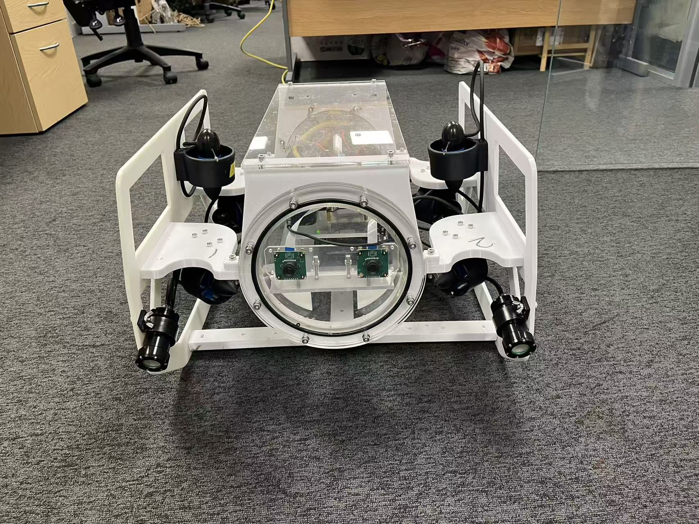
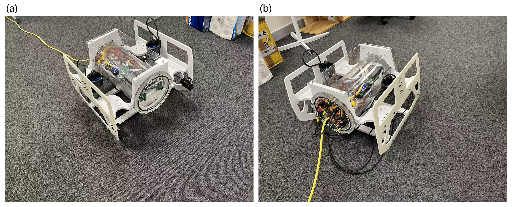

ROBOTICS · VISION · SYSTEMS
Chengdong Zhu Robot integration.
Perception, control & AI. I am a PhD researcher in Electronic Engineering at the University of York. My areas of focus are robot system integration, robot perception, robot control and AI development.
University of York · York, United Kingdom

ROV V1 Stereo vision research platform Areas of focus Robot system integration Robot perception Robot control AI development
01
Projects across four areas What I built, how it works and what has been verified.
Robot system integration Robot perception Robot control AI development 
01 / Robot system integration
Integrating a robot platform for underwater vision experiments.
My work Designed the mechanical structure and sensor mounts around a stereo camera payload. Integrated electronics, wiring and software control interfaces into the research platform. Organized supervised shallow-water tests and engineering documentation. Built research platform · supervised shallow-water testing
View integration work 02 / Robot perception
Connecting stereo data collection, visual degradation and SLAM evaluation.
My work Integrated the tank experiment platform and carried out stereo camera calibration. Collected and organized stereo sequences by degradation type and difficulty. Carried out visual SLAM evaluation and prepared the dataset and paper. Published dataset and paper · 16 sequences · 18,948 stereo pairs
03 / Robot control
Extending an existing flexible-arm controller with external visual position feedback.
My work Developed local numerical-Jacobian control and alternating/coordinated extension–bending strategies. Connected ROS pose feedback, coordinate transforms and measurement freshness checks. Added actuator allocation, bounded updates and independent final-position checks; tested with simulation and fake serial interfaces. Software prototype · offline validation complete · physical commissioning pending
View control methods and validation 04 / AI development
Turning model planning and tool calls into an inspectable CAD workflow.
My work Built model-provider adapters and a workbench for structured part and assembly planning. Connected MCP tools to serial native SolidWorks API execution, with staged saving and revision tracking. Integrated geometry checks and preview review; packaged native CAD, STEP, BOM and a Windows application. Windows prerelease available · native CAD validated on SolidWorks 2024
View the software and download 02
Publication & open resources 2026 JOURNAL ARTICLE
Chengdong Zhu · Mark Post
Sensors 26(20), 6567
Engineering across
vision and robotics. My background combines mechanical engineering with doctoral research in Electronic Engineering. I am interested in how visual perception methods behave when they meet the practical constraints of robotic experiments.
Download public CV ↗ 2023—present University of York PhD researcher · Electronic Engineering
2020—2023 China University of Mining and Technology MEng · Mechanical Engineering
2016—2020 China University of Mining and Technology BEng · Mechanical Engineering